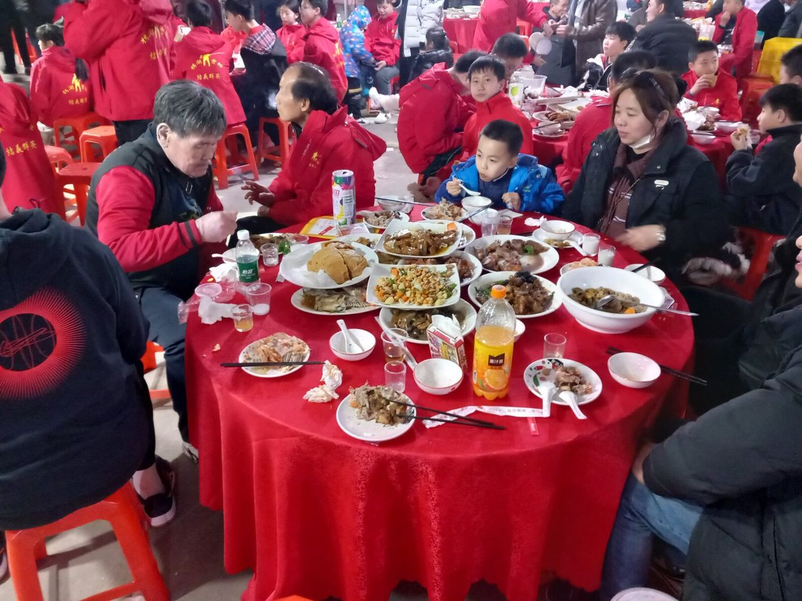

Together at One Table
At New Year the whole family comes together. Young and old sit side by side at round tables covered in red, eating, celebrating and telling stories. The table is richly laid, because nothing should be lacking in the new year.